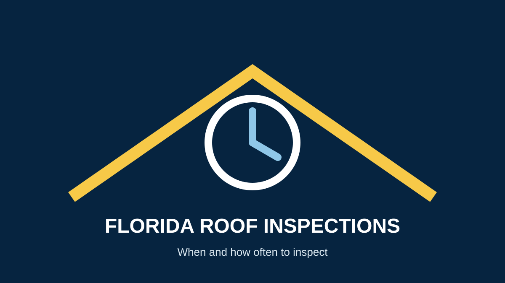

How Often Should You Inspect a Roof in Florida?
If you are searching for roof inspection frequency in Florida, think in terms of routine maintenance plus event-based inspections. Miami's weather makes it especially important to check a roof when there are known problems or after significant storms.
A practical inspection schedule
- Routine inspection: arrange professional assessment on a regular maintenance schedule appropriate for the roof and property.
- After major storms: inspect for visible wind, debris and water damage when conditions are safe.
- Older roofs: consider more frequent professional evaluation as materials approach the end of their expected service life.
- Before major work: inspect before deciding between repair and replacement.
- After a known leak: identify and repair the source rather than repeatedly treating interior symptoms.
What homeowners can check safely
From the ground, look for missing or displaced materials, damaged flashing, clogged drainage, visible debris and new stains inside the property. Do not climb onto a wet or damaged roof. A professional can evaluate areas that cannot be safely inspected from the ground.
Why inspections matter in Miami
Heat, moisture and severe weather can affect roofing materials over time. The U.S. Department of Energy has studied roofing-material aging under heat, moisture and UV exposure. Regular inspection can help identify deterioration before a small problem becomes a larger repair.
Read the DOE research on roofing-material aging.
What a professional roof inspection can look for
- Roofing-material condition and visible deterioration
- Flashing and penetrations
- Drainage and water-management concerns
- Visible storm damage
- Signs of water intrusion
- Conditions that may support repair or replacement
Inspection before insurance or replacement decisions
If a storm may have caused damage, document what you can safely see and contact your insurer when appropriate. A roofing assessment can help explain the physical condition and repair scope, but it does not determine insurance coverage.
Schedule a Roof Inspection →Frequently asked questions
Should a Florida roof be inspected every year?
A regular professional inspection schedule is a sensible maintenance practice, but the right frequency depends on the roof, property, age, condition and exposure. Follow manufacturer, warranty and insurer requirements where applicable.
Should I inspect my roof after a hurricane?
If the property experienced significant wind, debris impact or water intrusion, arrange a professional assessment when it is safe.
Can I inspect the roof myself?
You can perform safe ground-level observations, but avoid climbing onto the roof if conditions are wet, steep or damaged.
Sources
- U.S. Department of Energy — Accelerated Aging of Roofing Materials
- NOAA — Strengthen Your Home: Hurricane Preparedness
- GAF — Residential Roofing FAQs
Related Miami roofing services
Roof inspection · Roof repair · Storm damage roof repair · Roof lifespan